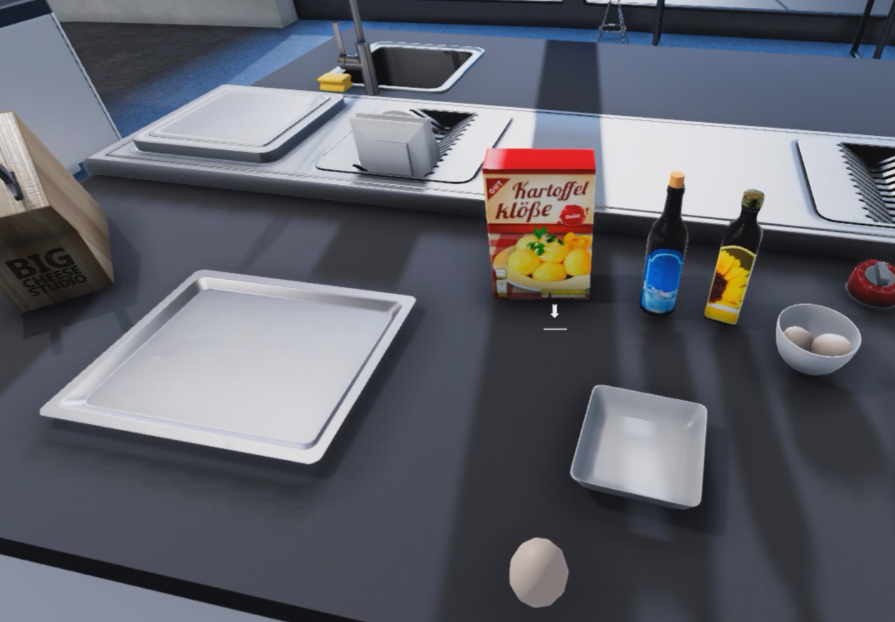
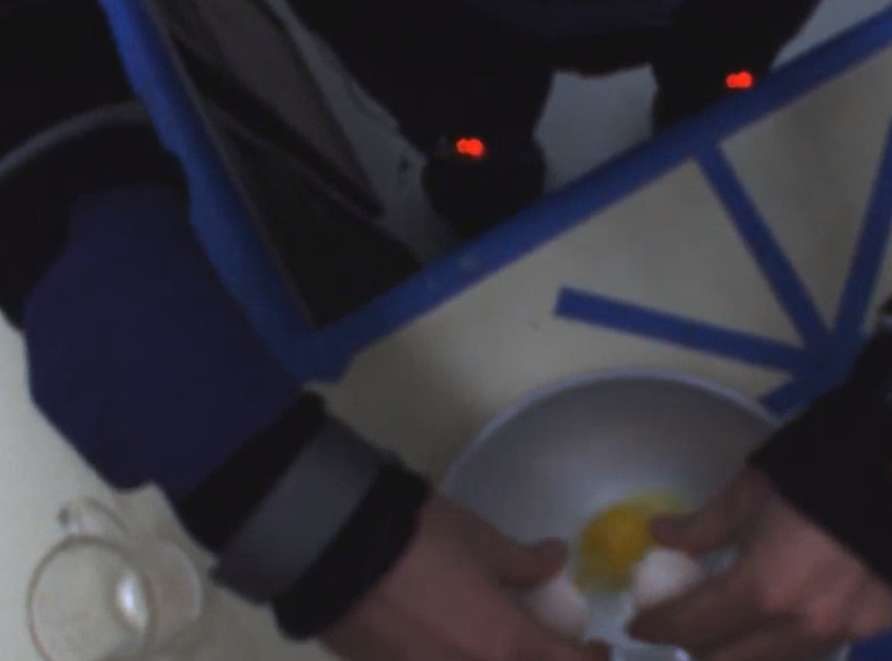
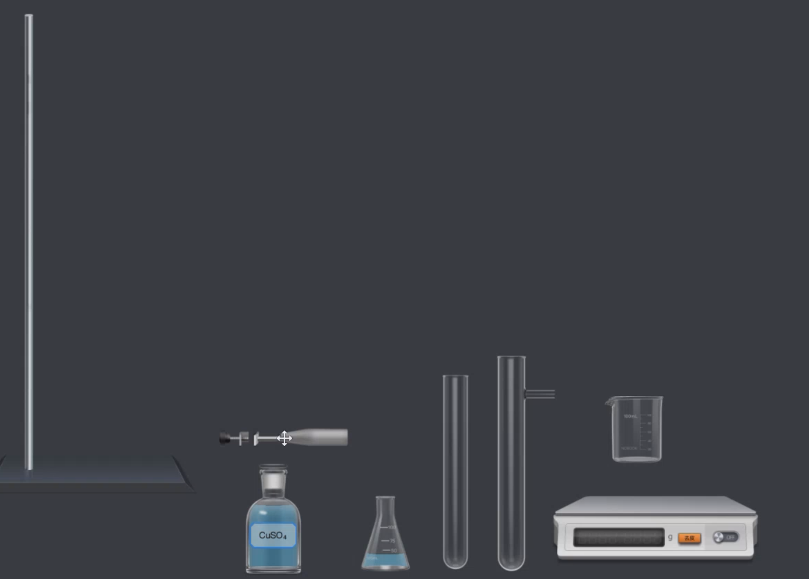
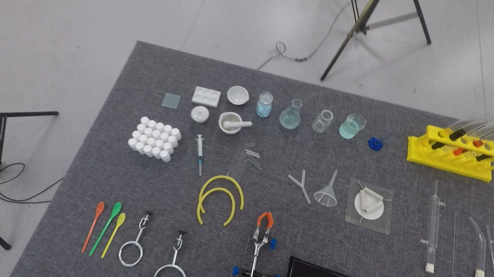
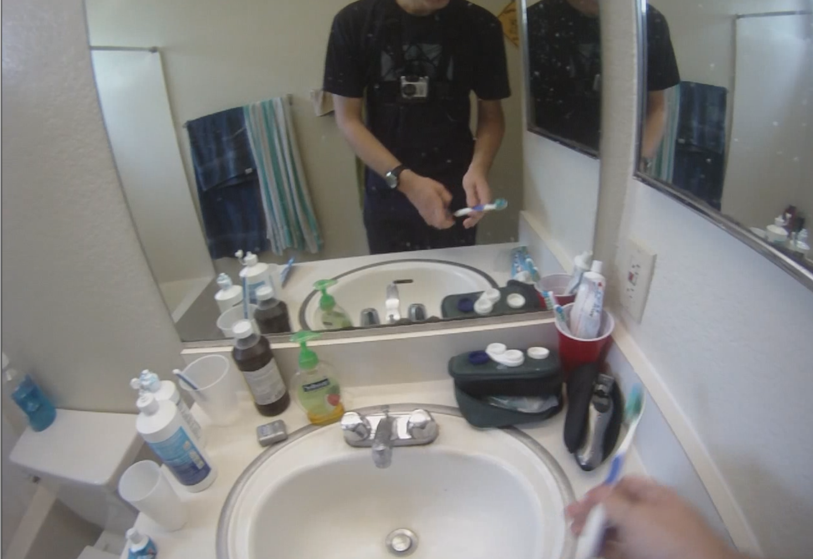
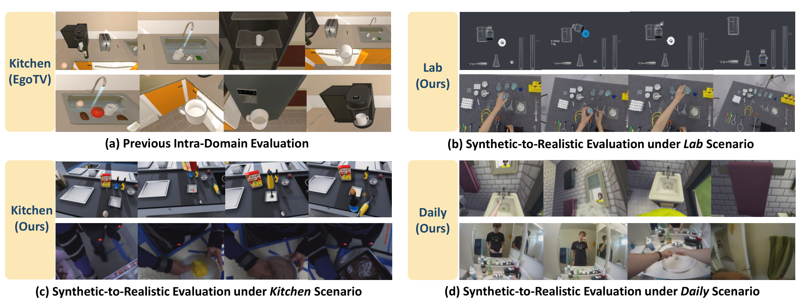
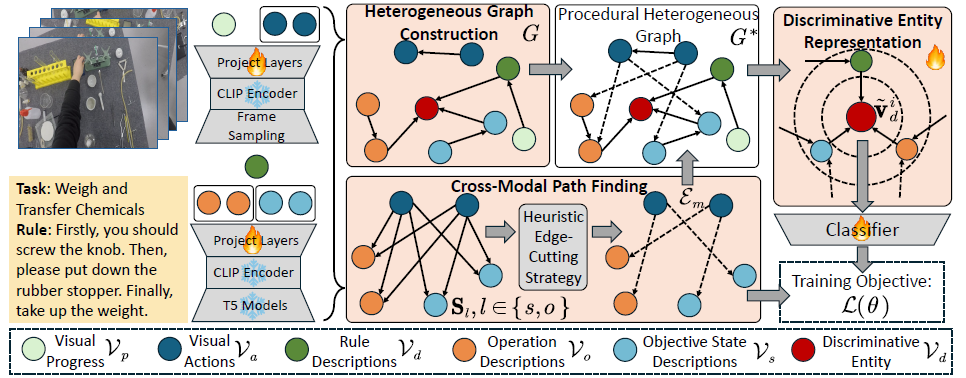
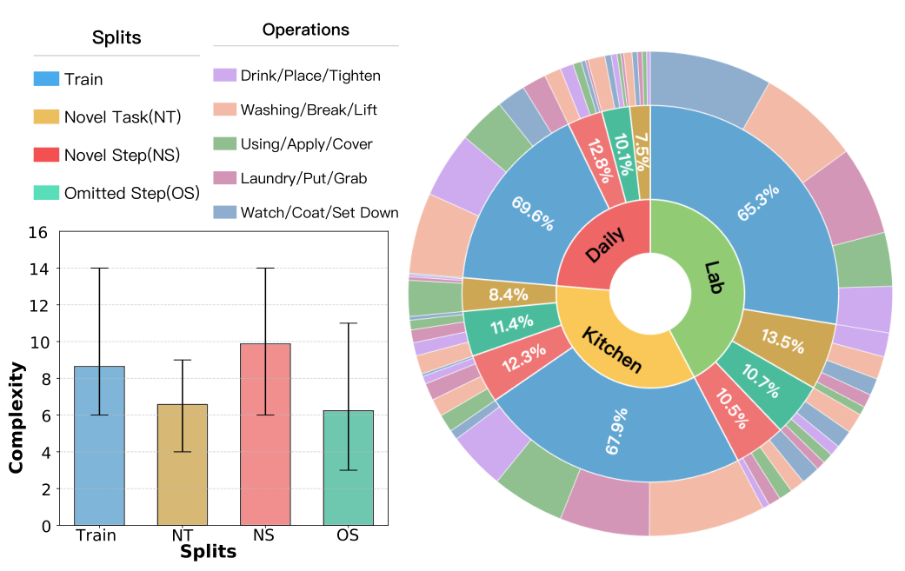
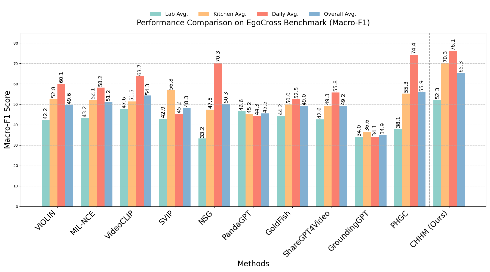

PHGC: Procedural Heterogeneous Graph Completion for Natural Language Task Verification in Egocentric Videos
| CVPR 2025 [Accepted] |
IEEE TPAMI [Under Review] |
| Xun Jiang1,2 |
Xing Xu1 |
Zheng Wang1 |
| Jingkuan Song1 |
Fumin Shen2 |
Heng Tao Shen1 |
| 1Tongji University |
2University of Electronic Science and Technology of China |
|
| Synthetic | | Realistic |
|  |
→ |
 |
| "Kitchen: Making Broniew" |
| Synthetic | | Realistic |
|  |
→ |
 |
| "Lab: Titration" |
| Synthetic | | Realistic |
|
→ |
 |
| "Daily: Brushing Tooth" |
|
|

We propose the Generalizable Egocentric Task Verification (GETV) challenge, which aims at achieving better model performance in the physical world while training models with only data from the digital world. Particularly, we construct the first egocentric cross-domain benchmark dataset, EgoCross, for synthetic-to-realistic evaluation. Our EgoCross dataset encompasses three different scenes and over 100 procedural tasks, serving as the initial benchmark for the GETV challenge.
Abstract

Natural Language-based Egocentric Task Verification (NLETV) aims to equip agents to determine if operation flows of procedural tasks in egocentric videos align with natural language instructions. Describing rules with natural language provides generalizable applications, but also raises cross-modal heterogeneity and hierarchical misalignment challenges. In this paper, we proposed a novel approach termed Procedural Heterogeneous Graph Completion (PHGC), which addresses these challenges with heterogeneous graphs representing the logic in rules and operation flows. Specifically, our PHGC method mainly consists of three key components: (1) Heterogeneous Graph Construction module that defines objective states and operation flows as vertices, with temporal and sequential relations as edges. (2) Cross-Modal Path Finding module that aligns semantic relations between hierarchical video and text elements. (3) Discriminative Entity Representation module excavates hidden entities that integrate general logical relations and discriminative cues to reveal final verification results. Additionally, we further constructed a new dataset called CSV-NL comprised of realistic videos. Extensive experiments on the two benchmark datasets covering both digital and physical scenarios, i.e., EgoTV and CSVNL, demonstrate that our proposed PHGC establishes stateof- the-art performance across different settings.
Our Extended EgoCross Dataset

EgoCross encompasses three distinct real-world application scenarios, i.e., Kitchen Cooking (Kitchen), Laboratory Experiment (Lab), and Daily Living (Daily), to comprehensively evaluate cross-domain NLETV performance. We illustrate the three scenarios of our EgoCross benchmark dataset in Fig. 3. For the Kitchen Cooking scenarios, real-world video-text pairs are curated from the EgoProceL dataset, while synthetic counterparts are extracted from CookingSim gameplay footage. Moreover, the Laboratory Experiment scenarios integrate authentic data from our prior CSV-NL benchmark dataset with procedurally generated sequences from the NoBook experimental simulation platform. Thirdly, the Daily Living leverages real-world footage from the ADL dataset, alongside virtual interactions captured within The Sims gaming environment. We employ 10 volunteers to conduct procedural tasks following the same operational sequence with tasks of realistic data, to collect the synthetic-to-realistic pairwise training and testing data. Each scenario features diverse procedural tasks with multi-step execution sequences. Specifically, kitchen operations include Brownie, Eggs, Pizza, and Salad preparation tasks, each comprising 5-10 steps and 13 distinct execution sequences. The laboratory scenarios cover 13 experimental procedures requiring at least 8 operational steps per task, with 20 variations per experimental sequence. Due to the diversity of simple human activities in human daily life, the Daily Living scenarios encompass 139 routine tasks, each structured with a minimum of 3 operational steps. To enhance linguistic diversity, every execution sequence across all tasks incorporates 10 distinct textual descriptions of operational rules, ensuring robust evaluation of textual grounding capabilities. Furthermore, all scenarios maintain a balanced representation of correct and erroneous operations at a 1:1 ratio, providing critical evaluation dimensions for failure mode analysis in cross-domain transfer learning.
Evaluated on Macro-F1

To holistically assess model robustness across diverse scenarios, especially given varying positive and negative sample ratios in the test
splits, we adopt Macro-F1 as our primary metric, which comprehensively indicates the performance to verify if a complex task is completed following the given text rules.